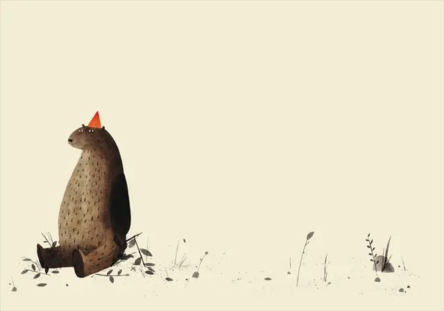
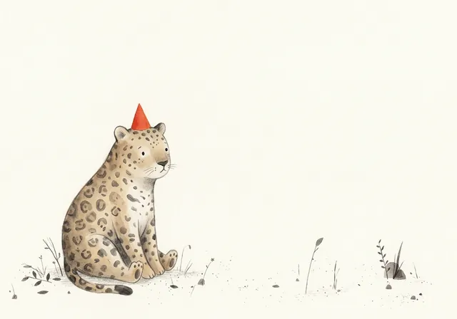
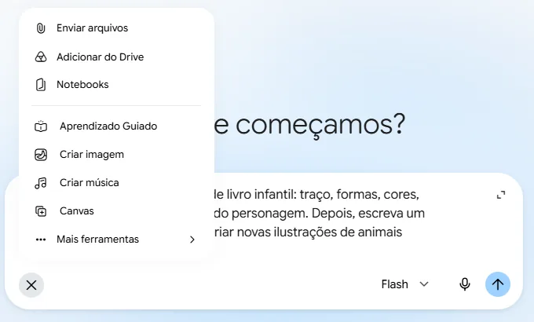
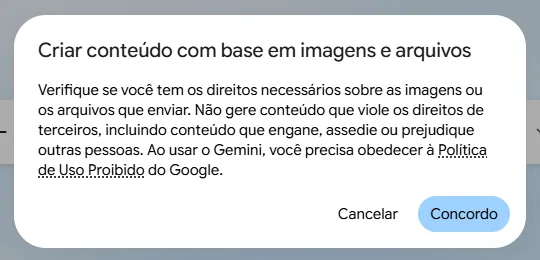
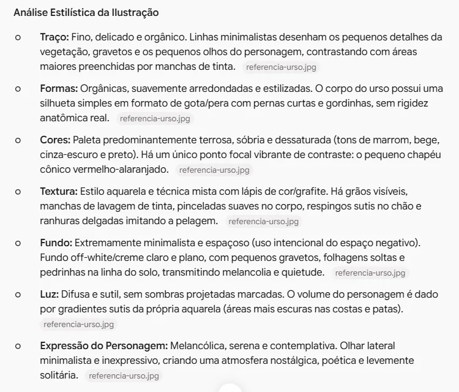
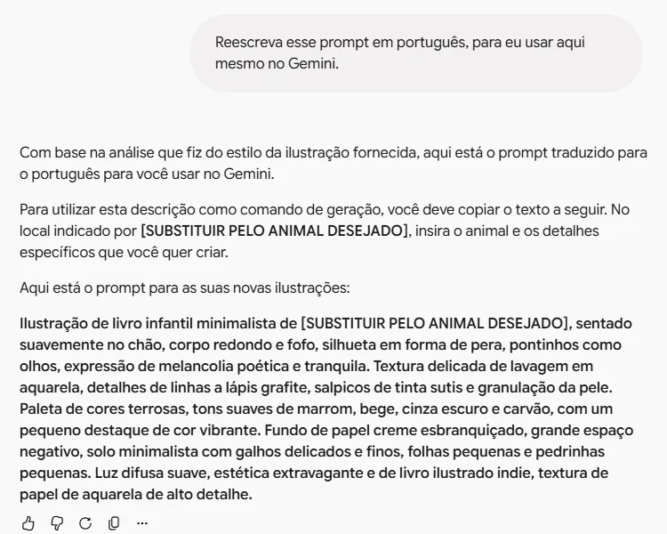
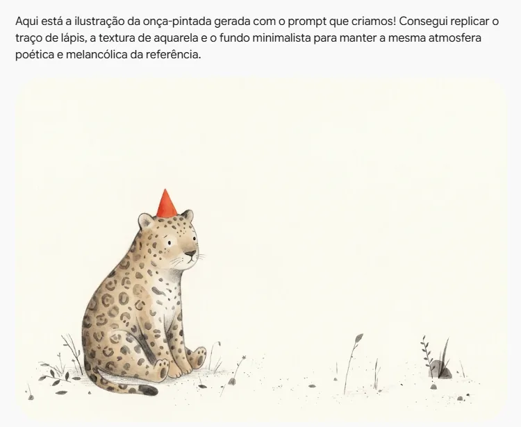

Dar estilo às imagens
Mostre ao Gemini uma ilustração de que você gosta e peça imagens no mesmo estilo. No exemplo, a onça ganha o traço de um livro infantil

o Gemini descreve o estiloPrompt de estiloTextura de aquarela com detalhes a lápis, paleta terrosa, fundo de papel creme, grande espaço vazio…
e desenha outro animal

Pedido genérico, imagem genérica
- Sem referência, a IA desenha uma espécie de média de tudo o que já viu.
- Por isso tantas imagens de IA se parecem: olhos grandes, contorno grosso, cores chapadas.
- Descrever um estilo em palavras é difícil. É mais fácil mostrar um exemplo.
Escolha uma referência
- Pode ser a página de um livro, um cartaz, um desenho de que você goste.
- No exemplo, uma ilustração do canadense Jon Klassen, autor de livros infantis premiados.
- Salve a imagem no computador: clique nela com o botão direito e escolha Salvar imagem como.

Anexe a referência
- Abra uma conversa nova no Gemini.
- Clique no + e escolha Enviar arquivos, como no tutorial do recado na agenda, no tópico 3.
- Escolha a imagem salva. Ela aparece em miniatura dentro da caixa.

Leia o aviso
- Na primeira imagem que você envia, o Gemini pede que você confirme ter direito sobre ela.
- Ao clicar em Concordo, você assume a responsabilidade pelo uso. O aviso não volta a aparecer.
- O estilo (traço, cores, textura) não tem proteção de direito autoral. A obra e os personagens, sim. Inspire-se no jeito de desenhar, sem copiar os personagens.
Analise o estilo desta ilustração de livro infantil: traço, formas, cores, textura, fundo, luz e a expressão do personagem. Depois, escreva um prompt que eu possa usar para criar novas ilustrações de animais exatamente nesse estilo.
Peça a análise do estilo
- Em vez de pedir a imagem direto, peça primeiro que o Gemini descreva o estilo em palavras.
- Diga o que observar: traço, formas, cores, textura, fundo, luz e expressão.
- E peça um prompt pronto, o texto de comando para reaproveitar depois.

Leia a análise
- O Gemini observa a imagem como um professor de artes.
- Ele percebe detalhes difíceis de pôr em palavras, como o espaço vazio em volta do urso e o único ponto de cor forte, o chapéu.
- Neste exemplo, ele até reconheceu o ilustrador.

Peça o prompt em português
- O primeiro prompt veio em inglês, pensado para outras ferramentas.
- Basta pedir: "Reescreva esse prompt em português, para eu usar aqui mesmo no Gemini."
- Copie o texto e guarde num documento. Ele é a base do próximo tutorial.

Gere a imagem no estilo
- Na mesma conversa, escreva: "Agora crie a imagem com esse prompt. O animal é uma onça-pintada."
- A onça vem em aquarela, sobre papel creme, com muito espaço vazio e o olhar de lado.
- Repare no chapéu vermelho: o Gemini copiou também o ponto de cor da referência.
PedidoEstilo de livro infantil, com traço simples e cores alegres
ReferênciaJon Klassen, I Want My Hat Back (2011)
PedidoIlustração de livro infantil minimalista. Textura de aquarela com detalhes a lápis grafite. Paleta terrosa, com um pequeno destaque de cor vibrante. Fundo de papel creme, grande espaço vazio…
Compare as onças
- Interativo: toque nos botões para ver cada versão.
- Você transformou uma imagem de que gosta num prompt de estilo, que pode usar quantas vezes quiser.
- Funciona com qualquer estilo: aquarela, xilogravura, história em quadrinhos, desenho a lápis.
- Confira o resultado: a IA pode copiar detalhes que você não pediu, como o chapéu.